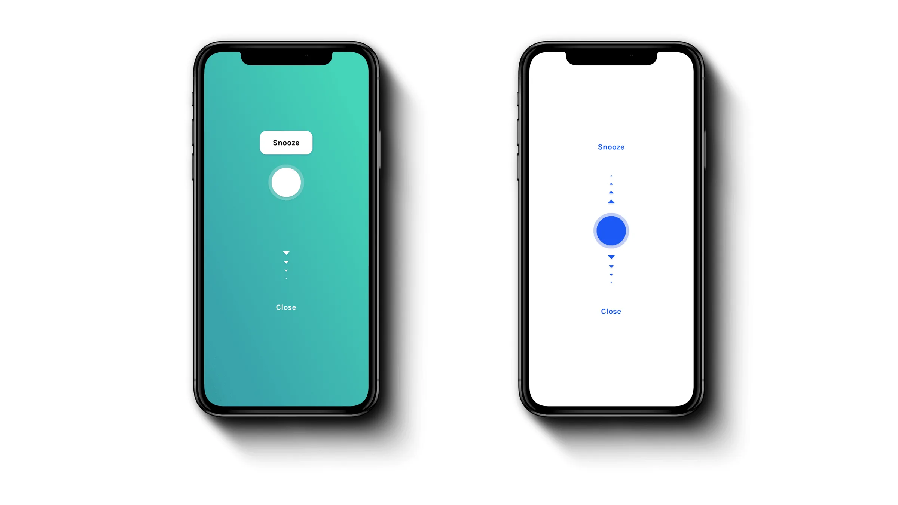

← Case Studies(14 / 14)
Group Alarm
Organized Mornings
G
UX DesignDesign Systems
Not everyone like's to read to much nowadays (thanks TikTok). See a comic strip?
Timeline2019
RoleProduct Designer
ToolsFigma
Downloads1,000+
Reviews20+

Where it came from
A celebrity posted a screenshot of their alarms. A gazillion of them, no structure, one for every conceivable purpose.
And I thought: why do we organise our files, our photos, our email and not this? Why not sets of alarms for different kinds of days?
I have five alarms between 6:45 and 7:30 so that I'm actually up by 7:30. You probably have something similar. Every alarm app treats those five as five unrelated objects.
The Insight
Single Alarms
One on, One off. Wake me at 6 tomorrow, I have a thing.
Group Alarms
Schedule-driven, repeating, and almost never actually one alarm. Get me up for work. In practice: 6:45, 6:55, 7:05, 7:15, 7:30. Five alarms, one intention.
Ideas (everything, good or bad), Product Goals (merged into real-world actions), Users (scenarios)
Schedule-driven, repeating, and almost never actually one alarm. Get me up for work. In practice: 6:45, 6:55, 7:05, 7:15, 7:30. Five alarms, one intention.
Alarm
Select Time, Date, Sound, Days
← also from Add Alarm
← also from Add Alarm
Confirm
Alarm Added
→ back to Add Alarm
→ back to Add Alarm
Group
Name Group
Add Alarm
opens alarm flow
opens alarm flow
Group Created
StartStepOutcomeLoop
The decision
The design question was where to put the weight. Groups are the real behaviour, but single alarms are the more frequent action; you add a one-off far more often than you build a new group.
What was shipped
All Alarms
The app works exactly like the one you already know, and added groups as the thing on top for people who want the structure. Familiar first, innovation optional.
Group vs Single Alarms
Adding a normal alarm stays as fast as it's ever been. Groups are a deliberate construct: name one ("Morning run"), see every alarm inside it, edit one or change something across all of them.
And the piece that made it worth building: toggle an entire group off in one action. Not running this week? One switch. Five separate alarms could never give you that.
The Design
Type and colour tuned for legibility, because people scan long alarm lists rather than reading them. And each group gets its own theme; so you know which group you're in without reading its name. Visual cues doing the work that labels would otherwise have to.
Setting alarms isn't a daily activity, so every screen had to be efficient rather than beautiful. Mostly.
01 / 04

01 / 02
The result
Downloads1,000+
Reviews20+
Sponsorship converting in-app coins into real investable money · partnerships with investment platforms or advisors to bridge learning and doing · a full curriculum for schools · micro-credentials people can share professionally.
NOTE FROM FUTURE SAMARTH
The best thing that happened here was a concept failing in front of ten people, early, before we'd fallen in love with it. I'd want that failure even earlier now; we built wireframes before we tested the format, and paper would have told us the same thing a week sooner.
Next case studies
View all

(02)
Paytm Insider
0 to 50,000 paying users in one month
Design Systems0→1A/B TestingResearchUX Design
Open